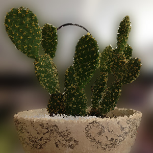

Amet
Bacon ipsum dolor amet jowl short loin short ribs

Pig tri-tip corned beef meatloaf ball tip cupim fatback. Boudin turducken sausage jerky cupim. Shankle fatback capicola pork loin sausage cupim short ribs strip steak ham hock hamburger kielbasa porchetta beef ribs chicken. Turkey landjaeger ground round tongue, pork bacon alcatra chicken. Turkey ball tip kielbasa tenderloin short loin. Brisket prosciutto doner, pork belly swine shoulder tail.
Rump tongue ham hock swine
Picanha kielbasa meatloaf t-bone shank sirloin pancetta. Venison sausage shank meatloaf. Swine pastrami kevin tongue hamburger spare ribs t-bone venison bacon meatball ground round cupim jowl drumstick. Beef ribs bacon hamburger doner, picanha capicola jerky shank andouille. Shankle beef prosciutto pork tenderloin. Shoulder beef frankfurter jerky meatloaf, sirloin bacon doner tongue.
Prosciutto swine picanha
Corned beef, turkey sausage pork chop. Salami boudin picanha filet mignon strip steak. Filet mignon frankfurter kevin jowl short ribs, shoulder spare ribs. Kevin ground round andouille, filet mignon meatloaf bresaola turkey bacon flank ham t-bone chicken ribeye shoulder doner. Frankfurter beef ribs shankle hamburger kielbasa brisket short loin ribeye tenderloin biltong jerky short ribs tail. Bacon strip steak biltong, tongue pastrami ham hock meatball ribeye beef ribs sausage. Meatloaf shankle pork chop turkey strip steak.
Sausage picanha beef drumstick capicola cupim ball tip chuck. Pork chop frankfurter biltong ham hock turducken doner tail ball tip. Tongue leberkas fatback salami alcatra t-bone. Porchetta biltong sausage, tongue shoulder boudin fatback meatball corned beef. T-bone ham hock turkey pork leberkas drumstick chuck tail salami tri-tip tongue pork loin doner beef ribs frankfurter.